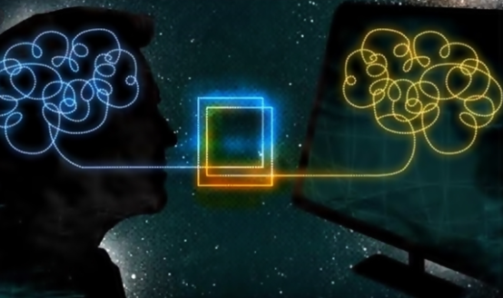
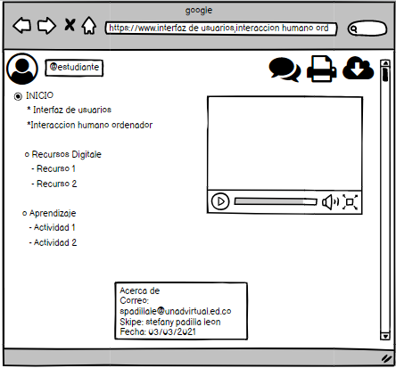

Interfaz de usuario
La interfaz de usuario o user interface (UI) engloba los recursos, sistemas y metodologías que facilitan la interacción de las personas con ordenadores o máquinas.
El objetivo de su desarrollo es que el usuario puede comunicarse con la máquina de la forma más sencilla e intuitiva posible.
Ingeniero virtual (2021). La interfaz de usuario (IU) y su importancia en el diseño. https://www.ingeniovirtual.com/la-interfaz-de-usuario-ui-y-su-importancia/
Interaccion humano ordenador
La Interacción entre Humanos y Computadoras, (HCI) (Human-Computer Interacton) es un área de investigación multidisciplinaria enfocada en las modalidades de interacción entre humanos y computadoras,
algunas veces se utiliza el término más genérico de Interface Humano Maquina, (HMI), para referirse a la interface de usuario en un sistema de manufactura o de control de procesos.

blogspot (2021). Interacción humano ordenador. http://interaccionhumancomcgm.blogspot.com/
